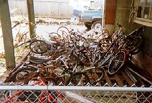
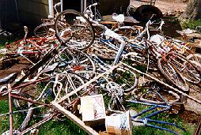
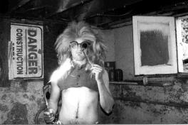
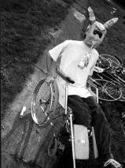
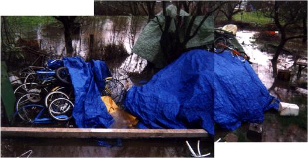

The Secret Laboratory is, of course, where we perform all of our research and development. We also recreate there; the concentrated fumes are potent, and there are plenty of bicycle saddles to sniff when one is lonely. It is where we keep the foundation of any scrounge-based biker club: the stash pile. We'd love to hide this underground, but who has a tunnel network big enough? Not us, so if you come across our pile in the yard, keep your hands to yourself, for your own safety.
 
|  | Besides a few tiny children happily working terms of indentured servitude before they can begin their predevolution therapy sessions, there are some permanent residents of the lab. After too many hours with their faces close to the torch, Vog and Skeeter can no longer breathe the rarefied air of the upper levels. Skeeter does fine with a small sample of burning chrome and cadmium residue in his mask, so he can still wheel around in the yard and collect parts. |  |
The lab has moved several times as influences from within and without the hosting house make it less or more chopper friendly. Occupants will arrive and leave, landlords will suddenly pay a visit, and neighborhood busybodies sometimes send the cops around to make us clean up. When complete domination of the immediate area starts to take too much effort, we pick through the piles for the most precious parts, load up the carts, and leave the dregs behind. We've had to move a few times, and have even left a house only to return to it a few years later when it again became pliable. Lately we've branched out, forming auxiliary chunkstations around town.

In the future, the waters will rise again. Much of the terrestrial world will be submerged, and will become one giant stash pile, ripe for the harvesting by our aquachoppers. Currently, however, only the bottom two or three layers spend much time underwater.
(Return to C.H.U.N.K. Technical Documentation)
| Copyright 2003 Megulon Five <megulon5@dclxvi.org>. |
|
This work is licensed under a Creative Commons License. | Last modified 7 August 1999. |